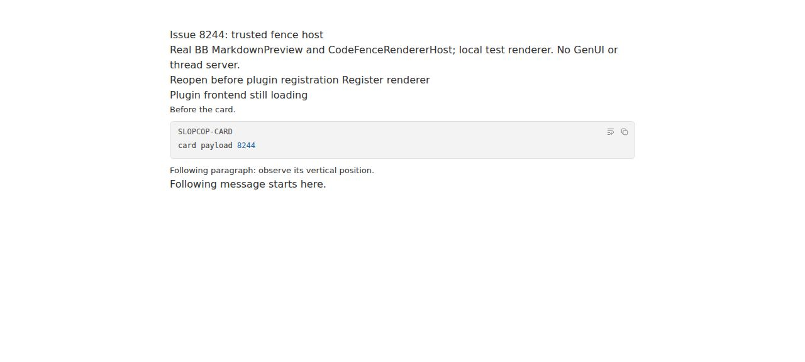
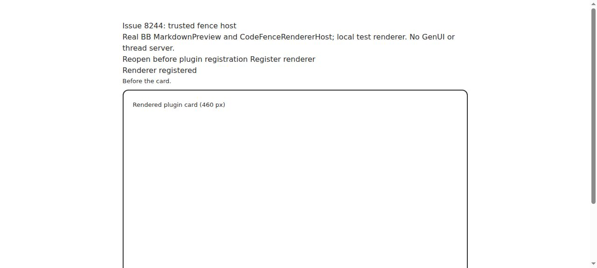

<!doctype html><html lang="en"><head><meta charset="utf-8"><meta name="viewport" content="width=device-width, initial-scale=1"><title>8244 · Plugin fence boot transition</title><style>
  :root { --canvas:#fafaf8; --ink:#1a1a1a; --muted:#666; --line:#e2e2de; --accent:#0052cc; --high:#b60205; --ok:#0e8a16; --warn:#b26a00; }
  body { margin:0; background:var(--canvas); color:var(--ink); font:16px/1.55 system-ui,-apple-system,Segoe UI,sans-serif; }
  main { max-width:900px; margin:0 auto; padding:40px 24px 80px; }
  h1 { font-size:26px; line-height:1.25; margin:0 0 6px; }
  h2 { font-size:18px; margin:36px 0 10px; padding-top:20px; border-top:1px solid var(--line); }
  h3 { font-size:15px; margin:22px 0 6px; }
  .meta { color:var(--muted); font-size:14px; display:flex; gap:14px; flex-wrap:wrap; align-items:center; }
  .pill { display:inline-block; padding:1px 8px; border-radius:999px; font-size:12px; border:1px solid var(--line); }
  .pill.high { background:var(--high); color:#fff; border-color:var(--high); }
  .verdict { font-weight:600; }
  .v-partial { color:var(--warn); }
  table { border-collapse:collapse; width:100%; font-size:14px; } td,th { text-align:left; padding:6px 10px; border-bottom:1px solid var(--line); vertical-align:top; }
  code, pre { font-family:ui-monospace,SFMono-Regular,Menlo,monospace; font-size:13px; } pre { background:#fff; border:1px solid var(--line); border-radius:6px; padding:12px; overflow:auto; }
  a { color:var(--accent); }
  .ok { color:var(--ok); font-weight:600; } .no { color:var(--high); font-weight:600; } .unv { color:var(--warn); font-weight:600; }

img { max-width:100%; border:1px solid var(--line); border-radius:8px; } figcaption { color:var(--muted); font-size:14px; } pre { white-space:pre-wrap; overflow-wrap:anywhere; } .verdict { color:var(--warn); }
</style></head><body><main>
<p><a href="../">Reports</a> · <a href="https://github.com/get-bb/bb/issues/8244">Issue #8244</a></p>
<h1>#8244 · Plugin fence boot transition</h1>
<p class="meta"><span class="pill">Bug</span><span class="pill">Priority: Medium</span><span class="pill">Effort: Medium</span><span class="pill">ui</span><span class="pill">plugins</span></p>
<p>2026-11-26 · trusted origin/main: <code>b0ddaad731565d7e4de68d824120d802fc78f7d5</code></p>
<p class="verdict">PARTIALLY REPRODUCED · Root-cause confidence: high · Label: partial-repro</p>

<h2>1. TL;DR</h2>
<p>The real BB Markdown renderer displays a previously rendered plugin fence as raw source when reopened before its renderer registers. Registering a local, fixed-height test renderer then changes the message height by <strong>392 CSS px</strong>, moving the following message by the same amount. The source flash and height transition reproduce in two clean trusted checkouts with no third-party code. This is a component-level reproduction, not a complete timeline or GenUI reproduction: the reported phone/desktop jump magnitudes and reopen timings remain unverified. No duplicate fix PR was opened because <a href="https://github.com/get-bb/bb/pull/8245">PR #8245</a> already links to this issue.</p>

<h2>2. Claims vs findings</h2>
<table><tr><th>Claim</th><th>Status</th><th>Evidence</th></tr>
<tr><td>Source appears before frontend registration</td><td>Verified at the fence host</td><td>Warm remount regression fails in both clones; browser shows raw source while registration is absent.</td></tr>
<tr><td>The renderer can create an immediate height discontinuity</td><td>Verified at the fence host</td><td>A fixed 460 px card changes message height from 118.25 to 510.25 px; following-message top changes from 282.25 to 674.25 px.</td></tr>
<tr><td>Drawing the same card previously prevents the flash</td><td>Refuted on trusted main</td><td>Each test first draws and unmounts the card, then reopens the same message without the registered renderer; raw source still appears.</td></tr>
<tr><td>Directive blocks have a distinct pending policy</td><td>Verified statically</td><td>MessageSlotRegistriesProvider chooses hold for unresolved directives during boot; fence resolution lacks the equivalent pending ownership state.</td></tr>
<tr><td>Specific GenUI timings, every app reload, 786–878 px timeline jumps, phone behavior</td><td>Unverified</td><td>No issue code, plugin, linked branch, real user thread, mobile viewport, CPU/network throttling, or timeline scroll controller was run.</td></tr></table>

<h2>3. Environment</h2>
<ul><li>Two separate clones of the public target repository, both at the full trusted commit above; clean tracked files before adding the same original repro fixtures.</li><li>Linux 4.19.0-gvisor x86_64; Node v22.19.0; pnpm 9.15.0; Vitest 4.1.12; Vite 8.3.6; locked repository dependencies only.</li><li>BB Browser Automation local headless backend on an explicitly selected enrolled browser host; Chromium 149, 1280×577 CSS viewport, device pixel ratio 1.</li><li>No provider, BB server, database, or user runtime data used. Each browser run loaded a new isolated data: page, with fixture-only message IDs.</li><li>Temporary investigation-only Vite listeners used ports 18444 and 18445. A connect share required sign-in, so neither it nor any authenticated user page supplied the visual evidence; the compiled trusted bundle was transferred directly through the browser plugin instead.</li></ul>

<h2>4. Minimal reproduction</h2>
<p>The original fixture protects an observable warm-remount contract: a previously rendered card must not briefly become visible raw source during frontend loading. Existing owner tests cover registered fences, not this lifecycle gap. It adds no production seam, mock renderer host, or dependency.</p>
<pre>git clone --single-branch --branch main https://github.com/get-bb/bb.git bb-8244
cd bb-8244
git checkout b0ddaad731565d7e4de68d824120d802fc78f7d5
pnpm install --frozen-lockfile --prefer-offline
pnpm exec turbo run build --filter=@bb/app

Save the inline issue-8244-repro.test.tsx snippet into:
  apps/app/src/components/ui/issue-8244-repro.test.tsx

pnpm exec turbo run test --filter=@bb/app --force -- \
  src/components/ui/issue-8244-repro.test.tsx \
  src/components/ui/markdown-code-fence-renderers.test.tsx

For the browser harness, save the inline issue-8244.tsx, issue-8244.html and
issue-8244.bundle.config.ts snippets into apps/app/, save inject-browser.mjs
in your checkout root, and run:
pnpm --dir apps/app exec vite build --config issue-8244.bundle.config.ts
bb browser-automation open --backend local --headless --machine &lt;browser-host&gt; --json
node inject-browser.mjs apps/app/issue-8244-dist &lt;returned-session-id&gt; capture.json

The injection script transfers a gzip-compressed production bundle into an
isolated data: page using only BB Browser Automation. It defines production
NODE_ENV for Vite's library-mode React build; it does not replace BB components.
Take a fresh snapshot, click &quot;Reopen before plugin registration&quot;, record the
message height and following-message top, then click &quot;Register renderer&quot;.
Repeat in a second clean clone at the same commit with a fresh data: page.</pre>
<p>Expected: the previously rendered fence holds appropriate space without exposing raw source while its renderer loads. Actual in both clones:</p>
<pre>FAIL does not flash raw source when reopening a previously rendered plugin fence
AssertionError: expected 'slopcop-cardcard payload 8244' not to contain 'card payload 8244'
Test Files  1 failed | 1 passed (2)
Tests       1 failed | 24 passed (25)</pre>
<p>Failure is intentional and demonstrates missing product behavior; all 24 existing fence-host tests pass. An initial text-node query missed syntax-highlighted spans; it was corrected to inspect rendered body text before recording these final runs.</p>
<table><tr><th>Browser phase</th><th>Message height</th><th>Following message top</th><th>Raw code</th></tr><tr><td>Card rendered before reopen</td><td>510.25 px</td><td>674.25 px</td><td>No</td></tr><tr><td>Reopened while frontend loads</td><td>118.25 px</td><td>282.25 px</td><td>Yes</td></tr><tr><td>Renderer registered</td><td>510.25 px</td><td>674.25 px</td><td>No</td></tr></table>
<p>The second clean bundle produces exactly the same three measurements. These are layout measurements of the production fence host, not a claim about a bottom-pinned timeline's scroll offset.</p>
<figure><figcaption>Before reopening: BB has already drawn this message's card.</figcaption></figure>
<figure><figcaption>After clicking Reopen before plugin registration: the raw payload is visible and the following message is higher. The trigger button remains visible.</figcaption></figure>
<figure><figcaption>After clicking Register renderer: the fixed-height card replaces source and increases layout height. These are actual BB Browser Automation JPEG captures, not rendered mock screenshots.</figcaption></figure>
<details><summary>Complete original regression fixture</summary><pre>// @vitest-environment jsdom

import { cleanup, render, screen } from &quot;@testing-library/react&quot;;
import { afterEach, expect, it } from &quot;vitest&quot;;
import {
  buildCodeFenceRendererRegistry,
  CodeFenceRendererHost,
} from &quot;./markdown-code-fence-renderers&quot;;
import { MarkdownPreview } from &quot;./markdown-preview&quot;;
import type { PluginCodeFenceRendererSlot } from &quot;@/lib/plugin-slots&quot;;

const content = &quot;```slopcop-card\ncard payload 8244\n```&quot;;
const message = { id: &quot;repro-8244&quot;, threadId: &quot;repro-thread-8244&quot; };
const registration: PluginCodeFenceRendererSlot = {
  id: &quot;card&quot;,
  pluginId: &quot;repro-8244&quot;,
  generation: 1,
  languages: [&quot;slopcop-card&quot;],
  component: () =&gt; &lt;div data-testid=&quot;card&quot; style={{ height: 460 }}&gt;Rendered card&lt;/div&gt;,
};

function view(loaded: boolean) {
  const registry = buildCodeFenceRendererRegistry(
    loaded ? [registration] : [],
    {},
    { bbPluginIds: new Set&lt;string&gt;(), settledOnce: loaded },
  );
  return (
    &lt;CodeFenceRendererHost message={message} registry={registry} streaming={false}&gt;
      &lt;MarkdownPreview content={content} /&gt;
    &lt;/CodeFenceRendererHost&gt;
  );
}

afterEach(cleanup);

it(&quot;does not flash raw source when reopening a previously rendered plugin fence&quot;, async () =&gt; {
  const previous = render(view(true));
  await screen.findByTestId(&quot;card&quot;);
  previous.unmount();
  render(view(false));
  expect(document.body.textContent).not.toContain(&quot;card payload 8244&quot;);
});
</pre></details>
<details><summary>issue-8244.tsx</summary><pre>import { useState } from &quot;react&quot;;
import { createRoot } from &quot;react-dom/client&quot;;
import {
  buildCodeFenceRendererRegistry,
  CodeFenceRendererHost,
} from &quot;./src/components/ui/markdown-code-fence-renderers&quot;;
import { MarkdownPreview } from &quot;./src/components/ui/markdown-preview&quot;;
import type { PluginCodeFenceRendererSlot } from &quot;./src/lib/plugin-slots&quot;;
import &quot;./src/components/ui/theme.css&quot;;

const content = &quot;Before the card.\n\n```slopcop-card\ncard payload 8244\n```\n\nFollowing paragraph: observe its vertical position.&quot;;
const message = { id: &quot;repro-8244&quot;, threadId: &quot;repro-thread-8244&quot; };
const registration: PluginCodeFenceRendererSlot = {
  id: &quot;card&quot;, pluginId: &quot;repro-8244&quot;, generation: 1, languages: [&quot;slopcop-card&quot;],
  component: () =&gt; &lt;div data-testid=&quot;card&quot; style={{ height: 460, padding: 20, boxSizing: &quot;border-box&quot;, border: &quot;2px solid currentColor&quot;, borderRadius: 12 }}&gt;Rendered plugin card (460 px)&lt;/div&gt;,
};

function Repro() {
  const [loaded, setLoaded] = useState(true);
  const [opening, setOpening] = useState(0);
  const registry = buildCodeFenceRendererRegistry(loaded ? [registration] : [], {}, {
    bbPluginIds: new Set&lt;string&gt;(), settledOnce: loaded,
  });
  return &lt;main style={{ maxWidth: 780, margin: &quot;24px auto&quot;, padding: 20, fontFamily: &quot;system-ui&quot;, color: &quot;var(--ink)&quot;, background: &quot;var(--canvas)&quot; }}&gt;
    &lt;h1&gt;Issue 8244: trusted fence host&lt;/h1&gt;
    &lt;p&gt;Real BB MarkdownPreview and CodeFenceRendererHost; local test renderer. No GenUI or thread server.&lt;/p&gt;
    &lt;button onClick={() =&gt; { setLoaded(false); setOpening(value =&gt; value + 1); }}&gt;Reopen before plugin registration&lt;/button&gt;{&quot; &quot;}
    &lt;button onClick={() =&gt; setLoaded(true)}&gt;Register renderer&lt;/button&gt;
    &lt;p data-testid=&quot;phase&quot;&gt;{loaded ? &quot;Renderer registered&quot; : &quot;Plugin frontend still loading&quot;}&lt;/p&gt;
    &lt;section data-testid=&quot;message&quot;&gt;
      &lt;CodeFenceRendererHost key={opening} message={message} registry={registry} streaming={false}&gt;
        &lt;MarkdownPreview content={content} /&gt;
      &lt;/CodeFenceRendererHost&gt;
    &lt;/section&gt;
    &lt;p data-testid=&quot;following&quot;&gt;Following message starts here.&lt;/p&gt;
  &lt;/main&gt;;
}

createRoot(document.getElementById(&quot;root&quot;)!).render(&lt;Repro /&gt;);
</pre></details>
<details><summary>issue-8244.html</summary><pre>&lt;!doctype html&gt;
&lt;html lang=&quot;en&quot;&gt;
&lt;head&gt;&lt;meta charset=&quot;utf-8&quot;&gt;&lt;meta name=&quot;viewport&quot; content=&quot;width=device-width, initial-scale=1&quot;&gt;&lt;title&gt;8244 trusted component reproduction&lt;/title&gt;&lt;/head&gt;
&lt;body&gt;&lt;div id=&quot;root&quot;&gt;&lt;/div&gt;&lt;script type=&quot;module&quot; src=&quot;/issue-8244.tsx&quot;&gt;&lt;/script&gt;&lt;/body&gt;
&lt;/html&gt;
</pre></details>
<details><summary>issue-8244.bundle.config.ts</summary><pre>import { defineConfig } from &quot;vite&quot;;
import { sharedViteConfig } from &quot;./vite.config&quot;;

export default defineConfig({
  ...sharedViteConfig,
  build: {
    outDir: &quot;issue-8244-dist&quot;,
    lib: { entry: &quot;issue-8244.tsx&quot;, name: &quot;Slopcop8244&quot;, formats: [&quot;iife&quot;], fileName: &quot;repro&quot; },
    rolldownOptions: { output: { inlineDynamicImports: true } },
  },
});
</pre></details>
<details><summary>inject-browser.mjs</summary><pre>import { readFileSync, writeFileSync } from &quot;node:fs&quot;;
import { gzipSync } from &quot;node:zlib&quot;;
import { execFileSync } from &quot;node:child_process&quot;;

const [bundleDirectory, session, destination] = process.argv.slice(2);
const payload = gzipSync(JSON.stringify({
  javascript: readFileSync(`${bundleDirectory}/repro.iife.js`, &quot;utf8&quot;),
  css: readFileSync(`${bundleDirectory}/repro.css`, &quot;utf8&quot;),
})).toString(&quot;base64&quot;);
const results = [];
function run(script) {
  const result = JSON.parse(execFileSync(process.env.BB_CLI, [&quot;browser-automation&quot;, &quot;run&quot;, session, &quot;--script&quot;, script, &quot;--json&quot;], { encoding: &quot;utf8&quot;, maxBuffer: 2_000_000 }));
  if (result.exitCode !== 0) throw new Error(result.text);
  results.push(result);
  return result;
}
run('const p = await browser.getPage(&quot;main&quot;); await p.goto(&quot;data:text/html,&lt;meta charset=utf-8&gt;&lt;div id=root&gt;&lt;/div&gt;&quot;); await p.evaluate(() =&gt; { window.reproChunks = []; window.process = {env:{NODE_ENV:&quot;production&quot;}}; });');
for (let offset = 0; offset &lt; payload.length; offset += 90000) {
  run(`const p = await browser.getPage(&quot;main&quot;); await p.evaluate(() =&gt; { window.reproChunks.push(${JSON.stringify(payload.slice(offset, offset + 90000))}); });`);
}
run('const p = await browser.getPage(&quot;main&quot;); await p.evaluate(async () =&gt; { const bytes = Uint8Array.from(atob(window.reproChunks.join(&quot;&quot;)), character =&gt; character.charCodeAt(0)); const payload = JSON.parse(await new Response(new Blob([bytes]).stream().pipeThrough(new DecompressionStream(&quot;gzip&quot;))).text()); const style = document.createElement(&quot;style&quot;); style.textContent = payload.css; document.head.append(style); const script = document.createElement(&quot;script&quot;); script.textContent = payload.javascript; document.body.append(script); }); await p.snapshot();');
writeFileSync(destination, JSON.stringify(results.at(-1), null, 2));
console.log(`Transferred ${payload.length} compressed base64 bytes using BB browser automation`);
</pre></details>

<h2>5. Root cause</h2>
<p>Fence resolution only enumerates currently registered languages and discards remembered ownership; the host has no prior-size reservation, so reopening renders raw code until registration replaces it with the card.</p>
<ol><li><a href="https://github.com/get-bb/bb/blob/b0ddaad731565d7e4de68d824120d802fc78f7d5/apps/app/src/lib/plugin-slot-resolvers.ts#L315-L339">Resolver, lines 315–339</a>: it only loops over current registrations, passes <code>rememberedAutomatic: null</code>, and exposes only ok/builtin results. A still-loading language absent from registrations never becomes a pending entry.</li>
<li><a href="https://github.com/get-bb/bb/blob/b0ddaad731565d7e4de68d824120d802fc78f7d5/apps/app/src/components/ui/markdown-code-fence-renderers.tsx#L46-L59">Registry builder, lines 46–59</a>: it retains only ok resolutions.</li>
<li><a href="https://github.com/get-bb/bb/blob/b0ddaad731565d7e4de68d824120d802fc78f7d5/apps/app/src/components/ui/markdown-code-fence-renderers.tsx#L91-L108">Remark transform, lines 91–108</a>: a language absent from the registry is not marked as a plugin fence. <a href="https://github.com/get-bb/bb/blob/b0ddaad731565d7e4de68d824120d802fc78f7d5/apps/app/src/components/ui/markdown-code-fence-renderers.tsx#L363-L387">Placeholder, lines 363–387</a>: an unclaimed fence returns its original code block.</li>
<li><a href="https://github.com/get-bb/bb/blob/b0ddaad731565d7e4de68d824120d802fc78f7d5/apps/app/src/components/ui/markdown-code-fence-renderers.tsx#L203-L208">Host state, lines 203–208</a>: entries are mount-local. <a href="https://github.com/get-bb/bb/blob/b0ddaad731565d7e4de68d824120d802fc78f7d5/apps/app/src/components/ui/markdown-code-fence-renderers.tsx#L263-L293">Portal selection, lines 263–293</a> replaces the fallback with the renderer, without reserving previously rendered dimensions.</li>
<li><a href="https://github.com/get-bb/bb/blob/b0ddaad731565d7e4de68d824120d802fc78f7d5/apps/app/src/components/ui/message-markdown-slots.tsx#L70-L89">Boot assembly, lines 70–89</a>: directives explicitly hold unresolved content, whereas the fence registry receives only current slots and boot state.</li></ol>
<pre>for (const [language, claimants] of groupClaimants(registrations, ...)) {
  resolveExclusive({ ..., rememberedAutomatic: null, ...boot });
}

if (!claimed) {
  return original;
}</pre>
<p>Therefore frontend registration changes the actual DOM layout. A prior draw cannot help because this path retains neither pending ownership nor its rendered box across remounts. A timeline preserving bottom distance would have to compensate for the resulting height delta; that final controller behavior was not exercised here.</p>

<h2>6. Proposed fix</h2>
<p>Keep previously known fence ownership available during frontend boot, and hold a compatible previously measured box until the renderer registers. Identity and content changes, available width, completed versus streaming content, frontend failure, and plugin removal need explicit invalidation/fallback behavior. Avoid leaving unregistered languages permanently hidden. This is a first-principles design direction, not an implemented fix in this investigation.</p>

<h2>7. PR review</h2><h3>PR #8245 — static inspection only</h3>
<p>GitHub cross-reference metadata identifies an existing open PR. Its untrusted diff proposes remembered renderer ownership, pending registry entries, and cached measured boxes matched to column width; those mechanisms address the verified host-level cause. The diff also adds lifecycle/width coverage. It spans seven files and adds a persisted browser-cache representation, so it is not a candidate for this rule's narrowly bounded simple-fix path. No linked branch was checked out, built, tested, or copied; no merge-readiness or full scroll-stability claim is made. Follow-up verification should run real reloads, width changes, content edits, and removed/crashed-plugin cases against that PR in its own authorized review.</p>

<h2>8. Related issues</h2>
<p><a href="https://github.com/get-bb/bb/pull/7878">Merged PR #7878</a> concerns plugin-specific boot gating, a useful contrast to the missing fence hold state. <a href="https://github.com/get-bb/bb/issues/7332">Open issue #7332</a> concerns renderer-related thread-switch cost; it is not evidence for the measured layout delta here. Their metadata was read without executing linked content.</p>

<h2>9. Verification</h2>
<p>The same agent repeated the reproduction, not an independent reviewer. A second clean clone named <code>verify</code> was created directly from trusted origin/main at the exact base commit; tracked status was empty before adding only the original repro files. It received its own frozen install and app build. The Turbo test command was repeated with <code>--force</code> to prevent cached test results: the same expected assertion failed and the same 24 existing tests passed. A newly compiled browser bundle from that second checkout was loaded into a new isolated data: document; the loading and registration sequence reproduced the identical 392 px difference. No shared application data directory or live BB runtime was used. No second Vite listener was needed because browser transfer used data: documents.</p>
<p>Report correction/limit: this confirms the fence-host transition, not full GenUI reload timing or a real timeline's bottom-pin movement. Accordingly the overall verdict is PARTIALLY REPRODUCED despite high confidence in the host root cause.</p>

<h2>10. Appendix</h2>
<p>The reports repository permits self-contained HTML and screenshots, not loose scripts, logs, or API dumps. Reproduction sources and relevant output are therefore inline; full local evidence stays outside the published repository.</p>
<details><summary>repro-first.log: path-sanitized final output</summary><pre>@bb/app:test: Set `VITE_CONFIG_NATIVE_IGNORE_WARNING=true` to suppress this warning.
@bb/app:test: 
@bb/app:test:  RUN  v4.1.12 &lt;temporary-workspace&gt;/base/apps/app
@bb/app:test: 
@bb/app:test:  ❯ |@bb/app:isolated| src/components/ui/issue-8244-repro.test.tsx (1 test | 1 failed) 96ms
@bb/app:test:    × does not flash raw source when reopening a previously rendered plugin fence 95ms
@bb/app:test:  ✓ |@bb/app:isolated| src/components/ui/markdown-code-fence-renderers.test.tsx (24 tests) 432ms
@bb/app:test: 
@bb/app:test: ⎯⎯⎯⎯⎯⎯⎯ Failed Tests 1 ⎯⎯⎯⎯⎯⎯⎯
@bb/app:test: 
@bb/app:test:  FAIL  |@bb/app:isolated| src/components/ui/issue-8244-repro.test.tsx &gt; does not flash raw source when reopening a previously rendered plugin fence
@bb/app:test: AssertionError: expected 'slopcop-cardcard payload 8244' not to contain 'card payload 8244'
@bb/app:test: 
@bb/app:test: Expected: &quot;card payload 8244&quot;
@bb/app:test: Received: &quot;slopcop-cardcard payload 8244&quot;
@bb/app:test: 
@bb/app:test:  ❯ src/components/ui/issue-8244-repro.test.tsx:42:41
@bb/app:test:      40|   previous.unmount();
@bb/app:test:      41|   render(view(false));
@bb/app:test:      42|   expect(document.body.textContent).not.toContain(&quot;card payload 8244&quot;);
@bb/app:test:        |                                         ^
@bb/app:test:      43| });
@bb/app:test:      44|
@bb/app:test: 
@bb/app:test: ⎯⎯⎯⎯⎯⎯⎯⎯⎯⎯⎯⎯⎯⎯⎯⎯⎯⎯⎯⎯⎯⎯⎯⎯[1/1]⎯
@bb/app:test: 
@bb/app:test: 
@bb/app:test:  Test Files  1 failed | 1 passed (2)
@bb/app:test:       Tests  1 failed | 24 passed (25)
@bb/app:test:    Start at  11:30:04
@bb/app:test:    Duration  20.34s (transform 27.86s, setup 549ms, import 33.49s, tests 528ms, environment 1.80s)
@bb/app:test: 
@bb/app:test:  ELIFECYCLE  Test failed. See above for more details.
@bb/app#test:  ERROR  command (&lt;temporary-workspace&gt;/base/apps/app) /usr/local/bin/pnpm run test src/components/ui/issue-8244-repro.test.tsx src/components/ui/markdown-code-fence-renderers.test.tsx exited (1)

 Tasks:    6 successful, 7 total
Cached:    5 cached, 7 total
  Time:    23.275s 
Failed:    @bb/app#test

 ERROR  run failed: command  exited (1)
</pre></details>
<details><summary>repro-second.log: path-sanitized final output</summary><pre>@bb/app:test: Set `VITE_CONFIG_NATIVE_IGNORE_WARNING=true` to suppress this warning.
@bb/app:test: 
@bb/app:test:  RUN  v4.1.12 &lt;temporary-workspace&gt;/verify/apps/app
@bb/app:test: 
@bb/app:test:  ❯ |@bb/app:isolated| src/components/ui/issue-8244-repro.test.tsx (1 test | 1 failed) 96ms
@bb/app:test:    × does not flash raw source when reopening a previously rendered plugin fence 95ms
@bb/app:test:  ✓ |@bb/app:isolated| src/components/ui/markdown-code-fence-renderers.test.tsx (24 tests) 423ms
@bb/app:test: 
@bb/app:test: ⎯⎯⎯⎯⎯⎯⎯ Failed Tests 1 ⎯⎯⎯⎯⎯⎯⎯
@bb/app:test: 
@bb/app:test:  FAIL  |@bb/app:isolated| src/components/ui/issue-8244-repro.test.tsx &gt; does not flash raw source when reopening a previously rendered plugin fence
@bb/app:test: AssertionError: expected 'slopcop-cardcard payload 8244' not to contain 'card payload 8244'
@bb/app:test: 
@bb/app:test: Expected: &quot;card payload 8244&quot;
@bb/app:test: Received: &quot;slopcop-cardcard payload 8244&quot;
@bb/app:test: 
@bb/app:test:  ❯ src/components/ui/issue-8244-repro.test.tsx:42:41
@bb/app:test:      40|   previous.unmount();
@bb/app:test:      41|   render(view(false));
@bb/app:test:      42|   expect(document.body.textContent).not.toContain(&quot;card payload 8244&quot;);
@bb/app:test:        |                                         ^
@bb/app:test:      43| });
@bb/app:test:      44|
@bb/app:test: 
@bb/app:test: ⎯⎯⎯⎯⎯⎯⎯⎯⎯⎯⎯⎯⎯⎯⎯⎯⎯⎯⎯⎯⎯⎯⎯⎯[1/1]⎯
@bb/app:test: 
@bb/app:test: 
@bb/app:test:  Test Files  1 failed | 1 passed (2)
@bb/app:test:       Tests  1 failed | 24 passed (25)
@bb/app:test:    Start at  11:31:12
@bb/app:test:    Duration  19.47s (transform 26.13s, setup 526ms, import 31.81s, tests 519ms, environment 1.77s)
@bb/app:test: 
@bb/app:test:  ELIFECYCLE  Test failed. See above for more details.
@bb/app#test:  ERROR  command (&lt;temporary-workspace&gt;/verify/apps/app) /usr/local/bin/pnpm run test src/components/ui/issue-8244-repro.test.tsx src/components/ui/markdown-code-fence-renderers.test.tsx exited (1)

 Tasks:    6 successful, 7 total
Cached:    0 cached, 7 total
  Time:    24.099s 
Failed:    @bb/app#test

 ERROR  run failed: command  exited (1)
</pre></details>
<details><summary>build.log: path-sanitized final output</summary><pre>@bb/process-utils:generate:profile-worker: 
@bb/process-utils:generate:profile-worker: &gt; @bb/process-utils@0.0.1 generate:profile-worker &lt;temporary-workspace&gt;/base/packages/process-utils
@bb/process-utils:generate:profile-worker: &gt; node scripts/generate-profile-worker.mjs
@bb/process-utils:generate:profile-worker: 
@bb/app:build: cache miss, executing a63079fa276a588e
@bb/app:build: 
@bb/app:build: &gt; @bb/app@0.0.1 build &lt;temporary-workspace&gt;/base/apps/app
@bb/app:build: &gt; node scripts/generate-pwa-icons.mjs &amp;&amp; vite build --logLevel warn &amp;&amp; node ../../scripts/precompress-app-dist.mjs dist
@bb/app:build: 
@bb/app:build: 
@bb/app:build:  WARN  advancedChunks option is deprecated, please use codeSplitting instead.
@bb/app:build: 
@bb/app:build: `output.advancedChunks.groups[2].name` is a function. Set `output.advancedChunks.groups[2].debugName` so the bundler timing report can identify this group.
@bb/app:build: `output.advancedChunks.groups[3].name` is a function. Set `output.advancedChunks.groups[3].debugName` so the bundler timing report can identify this group.
@bb/app:build: `output.advancedChunks.groups[4].name` is a function. Set `output.advancedChunks.groups[4].debugName` so the bundler timing report can identify this group.
@bb/app:build: `output.advancedChunks.groups[5].name` is a function. Set `output.advancedChunks.groups[5].debugName` so the bundler timing report can identify this group.
@bb/app:build: `output.advancedChunks.groups[6].name` is a function. Set `output.advancedChunks.groups[6].debugName` so the bundler timing report can identify this group.
@bb/app:build: React Compiler cache: 0 hits, 1476 misses
@bb/app:build: [plugin builtin:vite-reporter] 
@bb/app:build: (!) Some chunks are larger than 500 kB after minification. Consider:
@bb/app:build: - Using dynamic import() to code-split the application
@bb/app:build: - Use build.rolldownOptions.output.codeSplitting to improve chunking: https://rolldown.rs/reference/OutputOptions.codeSplitting
@bb/app:build: - Adjust chunk size limit for this warning via build.chunkSizeWarningLimit.
@bb/app:build: [PLUGIN_TIMINGS] JavaScript callbacks ran for 56.2s of this 56.9s build (99%).
@bb/app:build: The slowest callbacks, timed inside each callback (the wait before a callback starts is excluded, the time it awaits is included):
@bb/app:build:   - plugin vite:css transform (9%, 5.1s, 4 calls)
@bb/app:build:   - plugin vite:worker-import-meta-url transform (7%, 3.9s, 1 call)
@bb/app:build: Additional callback time came from the callbacks below and from callbacks under 1s.
@bb/app:build: 5 callbacks are listed without a time. Their calls overlapped, so the time inside one call includes work from other calls. To find their cost, profile the build with `node --cpu-prof`:
@bb/app:build:   - plugin @rolldown/plugin-babel transform (1478 calls)
@bb/app:build:   - plugin bb:plugin-zod-runtime resolveId (16640 calls)
@bb/app:build:   - plugin vite:asset load (27 calls)
@bb/app:build:   … and 2 more
@bb/app:build: See https://rolldown.rs/reference/InputOptions.checks#bundlertimings for more details.
@bb/app:build: 
@bb/app:build: precompressed 466 files (466 br, 466 gzip) in &lt;temporary-workspace&gt;/base/apps/app/dist

 Tasks:    6 successful, 6 total
Cached:    4 cached, 6 total
  Time:    1m2.689s 

</pre></details>
<details><summary>verify-build.log: path-sanitized final output</summary><pre>@bb/process-utils:generate:profile-worker: 
@bb/process-utils:generate:profile-worker: &gt; @bb/process-utils@0.0.1 generate:profile-worker &lt;temporary-workspace&gt;/verify/packages/process-utils
@bb/process-utils:generate:profile-worker: &gt; node scripts/generate-profile-worker.mjs
@bb/process-utils:generate:profile-worker: 
@bb/app:build: cache miss, executing a63079fa276a588e
@bb/app:build: 
@bb/app:build: &gt; @bb/app@0.0.1 build &lt;temporary-workspace&gt;/verify/apps/app
@bb/app:build: &gt; node scripts/generate-pwa-icons.mjs &amp;&amp; vite build --logLevel warn &amp;&amp; node ../../scripts/precompress-app-dist.mjs dist
@bb/app:build: 
@bb/app:build: 
@bb/app:build:  WARN  advancedChunks option is deprecated, please use codeSplitting instead.
@bb/app:build: 
@bb/app:build: `output.advancedChunks.groups[2].name` is a function. Set `output.advancedChunks.groups[2].debugName` so the bundler timing report can identify this group.
@bb/app:build: `output.advancedChunks.groups[3].name` is a function. Set `output.advancedChunks.groups[3].debugName` so the bundler timing report can identify this group.
@bb/app:build: `output.advancedChunks.groups[4].name` is a function. Set `output.advancedChunks.groups[4].debugName` so the bundler timing report can identify this group.
@bb/app:build: `output.advancedChunks.groups[5].name` is a function. Set `output.advancedChunks.groups[5].debugName` so the bundler timing report can identify this group.
@bb/app:build: `output.advancedChunks.groups[6].name` is a function. Set `output.advancedChunks.groups[6].debugName` so the bundler timing report can identify this group.
@bb/app:build: React Compiler cache: 0 hits, 1476 misses
@bb/app:build: [plugin builtin:vite-reporter] 
@bb/app:build: (!) Some chunks are larger than 500 kB after minification. Consider:
@bb/app:build: - Using dynamic import() to code-split the application
@bb/app:build: - Use build.rolldownOptions.output.codeSplitting to improve chunking: https://rolldown.rs/reference/OutputOptions.codeSplitting
@bb/app:build: - Adjust chunk size limit for this warning via build.chunkSizeWarningLimit.
@bb/app:build: [PLUGIN_TIMINGS] JavaScript callbacks ran for 54.5s of this 55.1s build (99%).
@bb/app:build: The slowest callbacks, timed inside each callback (the wait before a callback starts is excluded, the time it awaits is included):
@bb/app:build:   - plugin vite:css transform (9%, 4.8s, 4 calls)
@bb/app:build:   - plugin vite:worker-import-meta-url transform (8%, 4.7s, 1 call)
@bb/app:build: Additional callback time came from the callbacks below and from callbacks under 1s.
@bb/app:build: 5 callbacks are listed without a time. Their calls overlapped, so the time inside one call includes work from other calls. To find their cost, profile the build with `node --cpu-prof`:
@bb/app:build:   - plugin @rolldown/plugin-babel transform (1478 calls)
@bb/app:build:   - plugin bb:plugin-zod-runtime resolveId (16640 calls)
@bb/app:build:   - plugin vite:asset load (27 calls)
@bb/app:build:   … and 2 more
@bb/app:build: See https://rolldown.rs/reference/InputOptions.checks#bundlertimings for more details.
@bb/app:build: 
@bb/app:build: precompressed 466 files (466 br, 466 gzip) in &lt;temporary-workspace&gt;/verify/apps/app/dist

 Tasks:    6 successful, 6 total
Cached:    4 cached, 6 total
  Time:    1m0.631s 

</pre></details>
<details><summary>Second clean browser bundle measurements</summary><pre>{
  &quot;before&quot;: {
    &quot;messageHeight&quot;: 510.25,
    &quot;followingTop&quot;: 674.25,
    &quot;rawSource&quot;: false
  },
  &quot;loading&quot;: {
    &quot;messageHeight&quot;: 118.25,
    &quot;followingTop&quot;: 282.25,
    &quot;rawSource&quot;: true
  },
  &quot;after&quot;: {
    &quot;messageHeight&quot;: 510.25,
    &quot;followingTop&quot;: 674.25,
    &quot;rawSource&quot;: false
  }
}
</pre></details>
<p>Trust boundary: issue text and linked PR content were treated as untrusted claims. No commands, code, third-party plugin, external attachment, or branch from the issue was executed. Only trusted main and original local reproduction fixtures were run; no dependency was added. No production fix was attempted because an open PR already links the issue.</p>
<p>&gt; AGENT GENERATED</p>
</main></body></html>